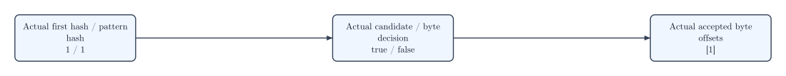
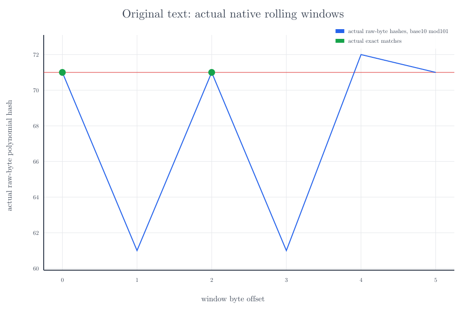
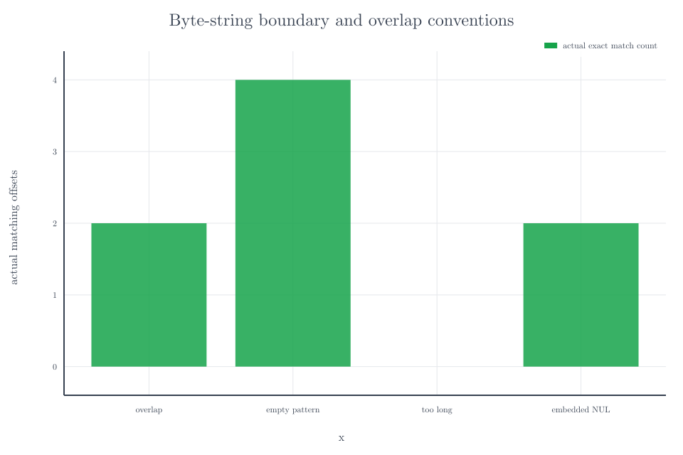
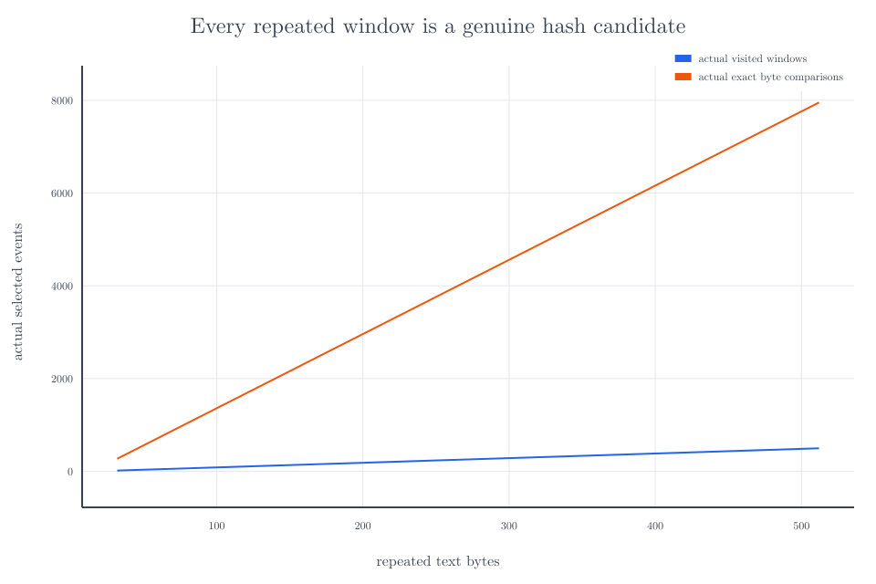

Rabin-Karp: actual rolling windows and exact collision rejection
Abstract
String matching must locate every occurrence, including overlaps, without mistaking a hash collision for equality. Rabin-Karp rolls a modular polynomial hash across fixed-length windows and verifies candidate bytes exactly. Actual native hashes replace the old report-local hash illustration. The original text abababbb and pattern aba remain, with explicit forced-collision, empty-pattern and embedded-NUL controls.
Mechanism and mathematical scope
For unsigned bytes \(c_i\), Horner hashing gives \(H=\sum_{i=0}^{m-1}c_i b^{m-1-i}\bmod p\). Set \(w=b^{m-1}\bmod p\). Sliding by one byte gives
Reducing after each widened product preserves this polynomial identity. Hash equality is only a candidate: the producer compares unsigned bytes until mismatch or full equality. Exact verification proves that every reported offset is a match, even with a deliberately tiny composite modulus. Overlaps follow by visiting every start offset.
With rare collisions, preprocessing plus one rolling update per window gives typical linear work. Repeated candidates can require \(O(nm)\) verification; the fixed deterministic hash has no unconditional adversary-resistant collision bound. The empty pattern convention yields all n+1 positions and performs no hashing.
A tiny actual producing history
The table and native concept diagram read the same producing execution. Every block below is a complete editable C++ program.
#include <dm/dm.hpp>
int main() {
namespace a = dm::algorithms;
namespace g = dm::graphics;
std::filesystem::create_directories("build");
a::RabinKarpOptions o;
o.modulus = 2;
o.base = 1;
auto t = a::rabin_karp_trace("ca", "a", o);
const auto &s = t.windows[0];
std::print("\n| actual offset | window hash | candidate | exact match | compared bytes |\n| ---: | ---: " "| --- | --- | ---: |\n");
for (const auto &e : t.windows)
std::print("| {} | {} | {} | {} | {} |\n", e.start, e.hash, e.candidate,
e.matched, e.compared_bytes);
g::Diagram d;
d.node("n0", {0, 0},
std::format("Actual first hash / pattern hash\n{} / {}", s.hash,
t.pattern_hash));
d.node("n1", {10, 0},
std::format("Actual candidate / byte decision\n{} / {}", s.candidate,
s.matched));
d.node("n2", {20, 0},
std::format("Actual accepted byte offsets\n{}", t.matches));
d.edge("n0", "n1").edge("n1", "n2");
d.save_svg("build/rabin_karp_tiny.svg");
}| actual offset | window hash | candidate | exact match | compared bytes |
|---|---|---|---|---|
| 0 | 1 | true | false | 1 |
| 1 | 1 | true | true | 1 |

The retained original experiment
#include <dm/dm.hpp>
int main() {
namespace a = dm::algorithms;
namespace g = dm::graphics;
std::filesystem::create_directories("build");
a::RabinKarpOptions o;
o.base = 10;
o.modulus = 101;
auto t = a::rabin_karp_trace("abababbb", "aba", o);
std::vector<double> x, y, mx, my;
std::print("\n| original window start | actual raw-byte hash | exact candidate | exact match |\n| ---: " "| ---: | --- | --- |\n");
for (const auto &s : t.windows) {
x.push_back(s.start);
y.push_back(s.hash);
if (s.matched) {
mx.push_back(s.start);
my.push_back(s.hash);
}
std::print("| {} | {} | {} | {} |\n", s.start, s.hash, s.candidate,
s.matched);
}
std::print("Actual default-hash matches: {}.\n",
a::rabin_karp_search("abababbb", "aba"));
auto p = g::RPlot::create();
p.lines(x, y, "actual raw-byte hashes, base10 mod101", {37, 99, 235}).points(mx, my, "actual exact matches", {22, 163, 74}, 7).abline_h(t.pattern_hash, {220, 38, 38}).title("Original text: actual native rolling windows").x_label("window byte offset").y_label("actual raw-byte polynomial hash");
p.save_svg("build/rabin_karp_original.svg");
}| original window start | actual raw-byte hash | exact candidate | exact match |
|---|---|---|---|
| 0 | 71 | true | true |
| 1 | 61 | false | false |
| 2 | 71 | true | true |
| 3 | 61 | false | false |
| 4 | 72 | false | false |
| 5 | 71 | true | false |
Actual default-hash matches: [0, 2].

Explicit controls
#include <dm/dm.hpp>
int main() {
namespace a = dm::algorithms;
namespace g = dm::graphics;
std::filesystem::create_directories("build");
std::vector<std::pair<std::string, std::string>> cases{
{"aaa", "aa"}, {"abc", ""}, {"a", "long"},
{std::string("a\0a\0", 4), std::string("a\0", 2)}
};
std::vector<std::string> labels{"overlap", "empty pattern", "too long",
"embedded NUL"};
std::vector<double> counts;
std::print("\n| fixture | actual offsets | actual visited windows |\n| --- | --- | ---: |\n");
for (std::size_t i = 0; i < cases.size(); ++i) {
auto r = a::rabin_karp_run(cases[i].first, cases[i].second);
counts.push_back(r.matches.size());
std::print("| {} | `{}` | {} |\n", labels[i], r.matches,
r.visited_windows);
}
auto p = g::RPlot::barplot(counts, labels, "actual exact match count");
p.title("Byte-string boundary and overlap conventions").y_label(
"actual matching offsets");
p.save_svg("build/rabin_karp_controls.svg");
}| fixture | actual offsets | actual visited windows |
|---|---|---|
| overlap | [0, 1] | 2 |
| empty pattern | [0, 1, 2, 3] | 4 |
| too long | [] | 0 |
| embedded NUL | [0, 2] | 3 |

Actual selected work and sensitivity
#include <dm/dm.hpp>
int main() {
namespace a = dm::algorithms;
namespace g = dm::graphics;
std::filesystem::create_directories("build");
std::vector<double> x, y, z;
std::print("\n| repeated text length | pattern length | actual windows | actual compared bytes |\n| " "---: | ---: | ---: | ---: |\n");
for (std::size_t n : {32, 64, 128, 256, 512}) {
auto r = a::rabin_karp_run(std::string(n, 'a'), std::string(16, 'a'));
x.push_back(n);
y.push_back(r.visited_windows);
z.push_back(r.compared_bytes);
std::print("| {} | 16 | {} | {} |\n", n, r.visited_windows,
r.compared_bytes);
}
auto p = g::RPlot::create();
p.lines(x, y, "actual visited windows", {37, 99, 235}).lines(
x, z, "actual exact byte comparisons", {234, 88, 12}).title(
"Every repeated window is a genuine hash candidate").x_label(
"repeated text bytes").y_label("actual selected events");
p.save_svg("build/rabin_karp_work.svg");
}| repeated text length | pattern length | actual windows | actual compared bytes |
|---|---|---|---|
| 32 | 16 | 17 | 272 |
| 64 | 16 | 49 | 784 |
| 128 | 16 | 113 | 1808 |
| 256 | 16 | 241 | 3856 |
| 512 | 16 | 497 | 7952 |

API and interpretation
The original base10/mod101 illustration remapped letters to1,2 in a separate report hash. The new figure uses actual native unsigned raw bytes97,98 under those same configurable hash parameters, so the numerical hashes intentionally differ while exact offsets remain0,2. The normal public search retains base256/mod1000000007. The tiny collision example has both c and a congruent modulo2 yet rejects c by exact bytes. Counters count actual scalar verification work, not optimized string-library instructions. The repeated-pattern control has genuine matches; it shows O(m) verification at each window without claiming they are spurious collisions.
Reusable producers, fixtures and histories live in the canonical C++ library. Captured records own their values and do not come from a separate report replay. Selected counters and record/scalar policies are specified at their API boundaries; they are not peak-byte or wall-time budgets. Synthetic structural inputs are controlled fixtures for these mechanisms.
References
Verified in the shared ten-document batch: 108 scoped native cases (22 new plus86 existing; one unchanged Rayleigh failure baseline-confirmed and carried to batch314–323);22 directly instrumented ASan/UBSan cases;91 executable public examples;367/367 full-file definitions plus17/17 common-sampler/engine definitions;10 hovers;32478 independent records/106910 checks;frozen compatibility across all ten families;12 checkout/installed standalone headers and linked consumer;40 executed programs and40 inspected figures with both exports. Legacy retirement follows the completed validation gates.